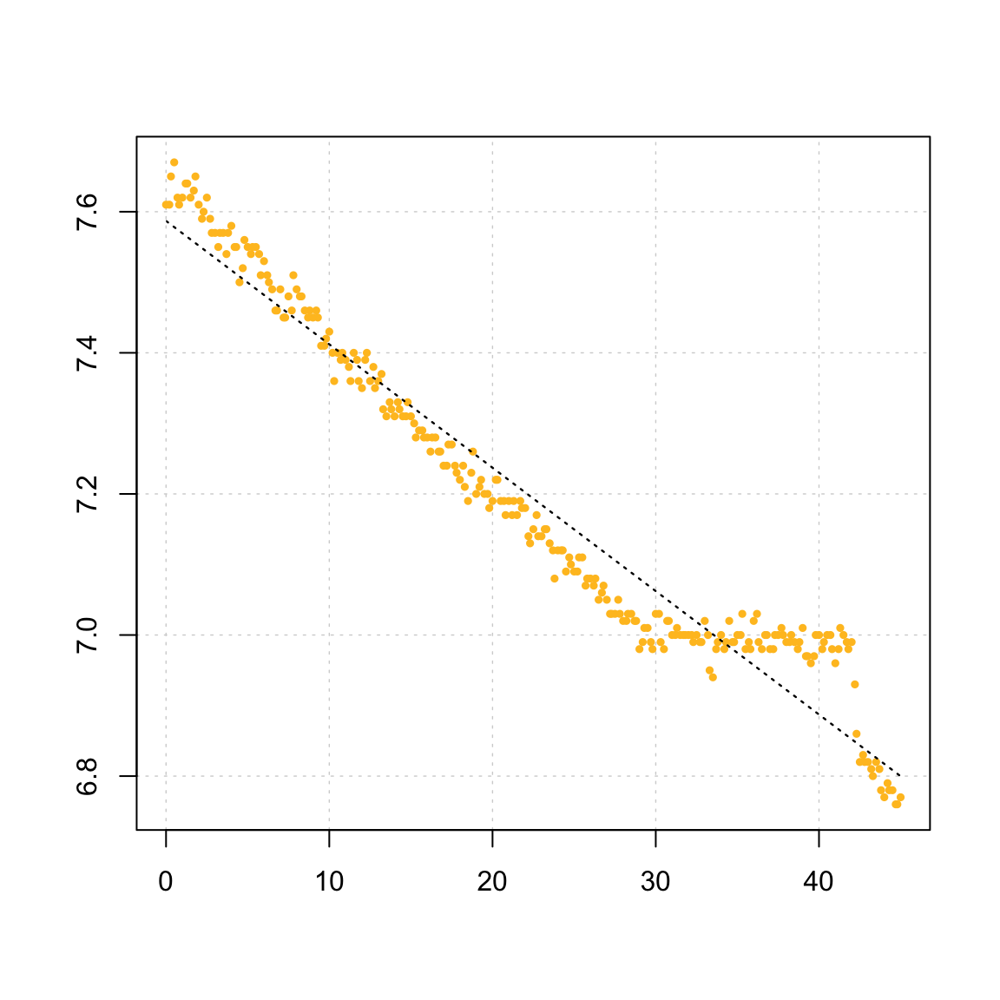

respR Workflow
Januar Harianto
Introduction to respR
When working with aquatic respirometry data, you will often need to:
- Ensure that the data, or at least a subset of the data, is representative of the research question of interest.
- Perform an initial analysis of the data to estimate the rate of change in oxygen concentration or amount.
- Depending on the experimental setup, correct for background usage of oxygen by micro-organisms, or correct for oxygen flux from the air.
- Scale the resulting usage rate to the volume (of the medium) and mass (of the animal), and convert to appropriate units.
The respR package contains several functions to make these actions quick and easy:
- It provides visual feedbacks and diagnostic plots to help you subset and analyse your data.
- It uses computational techniques such as rolling regressions and kernel density estimates to estimate ranked maximum, minimum or best fit sections of the data.
- By separating the workflow into a series of connected functions, you can “mix and match” functions to help you achieve your result.
Example Data
We have provided example data that can be used immediately once respR is loaded. The data are urchins.rd, intermittent.rd, sardine.rd and squid.rd. These data were obtained from past experiments and more information can be obtained by invoking the ? command in the R console, for instance, ?urchins.rd.
The typical respR workflow
respR was designed to work best with data frame objects. This includes objects of class data.frame, data.table and tibble. The user should already know how to import data into these formats as they are fundemental data structures in R. Here we describe a typical workflow in the analysis of respirometry data once it has been loaded into R. The example data used is urchins.rd, where the first column of the data frame is time data, while the remaining 18 columns are dissolved \(O_2\) data. Columns b1 and b2 contain background respiration.
head(urchins.rd)
#> time.min a b c d e f g h i j k l
#> 1 0.0 7.86 7.86 7.64 7.65 7.87 7.74 7.62 7.65 7.96 7.75 7.72 7.71
#> 2 0.2 7.87 7.79 7.60 7.71 7.87 7.72 7.61 7.66 7.97 7.72 7.71 7.71
#> 3 0.3 7.89 7.70 7.60 7.70 7.90 7.72 7.61 7.63 7.98 7.72 7.69 7.77
#> 4 0.5 7.90 7.68 7.60 7.72 7.92 7.74 7.62 7.66 7.97 7.72 7.70 7.77
#> 5 0.7 7.87 7.64 7.60 7.67 7.90 7.73 7.59 7.65 7.95 7.71 7.66 7.76
#> 6 0.8 7.82 7.69 7.61 7.61 7.88 7.70 7.60 7.65 7.94 7.70 7.63 7.72
#> m n o p b1 b2
#> 1 7.87 7.61 6.96 7.04 7.90 7.70
#> 2 7.89 7.61 6.96 7.01 7.89 7.70
#> 3 7.89 7.65 6.97 7.05 7.90 7.69
#> 4 7.89 7.67 6.96 7.09 7.89 7.69
#> 5 7.86 7.62 6.95 7.00 7.90 7.68
#> 6 7.86 7.61 6.94 6.99 7.90 7.67Step 1: Check for common errors
We first use inspect_data() on the data frame to scan for:
- Missing/non numeric (
NA/NaN) data; - sequential time data;
- duplicates in time data; and
- evenly-spaced time data.
By default, the function always assumes the first column (xcol) is time data, while the second column (ycol) is \(O_2\) data. In the case of urchins.rd where a multi-column dataset is provided, the function also defaults to the processing of just the first 2 columns. You can use the xcol and ycol arguments to modify that behaviour.
urchin <- inspect_data(urchins.rd, xcol = 1, ycol = 15)
#> n : num [1:271] 7.61 7.61 7.65 7.67 7.62 7.61 7.62 7.64 7.64 7.62 ...
#> time.min : num [1:271] 0 0.2 0.3 0.5 0.7 0.8 1 1.2 1.3 1.5 ...
#> ---
#> Score
#> No NA/NaN in Time (xcol) PASS
#> No NA/NaN in O2 (ycol) PASS
#> Sequential Time (xcol) PASS
#> Non-duplicated Time PASS
#> Evenly-spaced Time FAIL***
#> ---
#> Warning: Time data (xcol) is irregular. Subsetting by `row` may result in
#> irregular durations.
#> Unevenly-spaced time (xcol) location(s), by row (first 50):
#> 1 2 3 4 5 6 7 8 9 10 11 12 13 14 15 16 17 18 19 20 21 22 23 24 25 26 27 28 29 30 31 32 33 34 35 36 37 38 39 40 41 42 43 44 45 46 47 48 50 53
#> New dataframe generated.
From the plot, we can see irregularities in these data near the end of the timeseries (in this case the sea urchin had interfered with the oxygen sensor). A linear regression of the entire data series would therefore give an erroneous calculation of the true rate. The function also warns us that time data is not evenly-spaced. We have several options to manage non-linear and irregular timeseries data. For now, the data frame is saved as an object, urchin.
It should be noted that using inspect_data is optional - the main functions in our package will readily accept any data frame as long as data are all numeric and error-free. Running the function is a qualitative step that simply flags potential issues about the data before it is analysed.
Step 2: Process background respiration
The presence of microorganisms in the respirometry medium may be a potential source of significant experimental bias, and we may want to account for background rates during experiments. Since background rates typically account for a small percentage of experimental rates, these often-called “blank” experiments are routinely conducted alongside, or before and after main experiments, and the rates are averaged across several datasets to obtain a more accurate estimate of the correction.
The function calc_rate.bg() can be used to simultaneously process multiple background rate measurements as long as they share the time data. In urchins.rd, background respiration was recorded and saved in columns 18 and 19. We analyse the data using calc_rate.bg() and save the output as an object.
# Note that the data is truncated by time, from 5 to 40 minutes (instead of
# 0 to 45).
bg <- calc_rate.bg(urchins.rd, xcol = 1, ycol = 18:19, from = 5, to = 40, by = "time")
print(bg)
#> Rate(s):
#> [1] -0.0008733404 -0.0007841207Step 3: Estimate rate
Calling the function calc_rate() on your data, with no additional arguments, will prompt the function to perform a linear regression on the entire data. The function will automatically consider the first column as time data, and the second column as dissolved \(O_2\) data.
calc_rate(urchin) # same as: calc_rate(urchin$df)
#> Rate(s):
#> [1] -0.01749242Note how the function can recognise and extract data from the output object of inspect_data(). Alternatively, you can also use a data.frame object to run other analyses using the same function.
In many cases, there is a need to truncate or subset the data before rate is determined. For example, we may want to determine rate over an exact period of time, or within a threshold of O2 concentrations. Equipment interference or other factors may also cause irregularities or “spikes” in the data. We can work around the error(s) and subset the regions that are not erroneous and still obtain valid results.
Based on the from and to arguments, a user may use calc_rate() to truncate data in any of 4 ways:
-
Time period (
by = "time") - “What is the average rate over a 25 minute period?” -
Total oxygen consumed/produced (
by = "o2") - “At what rate is oxygen consumed between saturation points of 95% and 80%?” -
Proportion based on total oxygen consumed (
by = "proportion") - “What is the rate from halfway down the data?” -
Precise subsetting by row (
by = "row"). - “I’d like to subset between rows 11 and 273.”
Note that for values of O2 and time that do not match any value in the data, the function will identify the closest matching time or O2 values to the inputs, rounded down, and uses these for subsequent calculations.
rate <- calc_rate(urchin, from = 4, to = 29, by = "time")
rate # print(rate)
#> Rate(s):
#> [1] -0.02177588Calling summary() will produce a data.frame object that can be saved directly into a file.
# write.csv(summary(rate), file = 'results.csv')
summary(rate)
#> Summary:
#> intercept_b0 rate_b1 rsq row endrow time endtime oxy endoxy
#> 1: 7.636454 -0.02177588 0.987 25 175 4 29 7.58 6.98
#> rowlength timelength rate_twopoint
#> 1: 150 25 6.6768Plotting the output provides a series of diagnostic plots of the data subset that was analysed.
plot(rate)
#> Plotting...this may take a while for large datasets.
Step 4: Adjust for background respiration
Since background rate has been calculated in calc_rate.bg(), adjustment is straightforward:
a.rate <- adjust_rate(rate, bg)
a.rate
#> Note: please consider the sign of the value while correcting the rate.
#> Input rate: -0.02177588
#> Adjustment: -0.0008287306
#> Adj. rate: -0.02094715Step 5: Convert the results
Once the rate of change of oxygen has been determined, we may either want to calculate:
- Total change in O2 per unit time; or
- Mass-specific rate of change in O2.
The function convert_rate() can be used to scale rate values to chamber volume and/or specimen mass. For example, the user may convert the output of calc_rate() to O2 consumed over an hour:
convert_rate(a.rate, o2.unit = "mg/L", time.unit = "sec", output.unit = "mg/s",
volume = 1.09)
#> Input:
#> [1] -0.02094715
#> [1] "mg/L" "sec"
#> Output:
#> [1] -0.02283239
#> [1] "mg/sec"Or, the user may convert a known rate to a volume-corrected, mass-specific rate:
convert_rate(a.rate, o2.unit = "mgl-1", time.unit = "s", output.unit = "mg/s/kg",
volume = 1.09, mass = 0.19)
#> Input:
#> [1] -0.02094715
#> [1] "mg/L" "sec"
#> Output:
#> [1] -0.1201705
#> [1] "mg/sec/kg"A string matching algorithm is used to automatically recognise variations in base units. For example, "ml/s", "mL/sec", "milliliter/s", and "millilitre/second" are all equally identified as mL/s. Unit delimiters can be any combination of a space, dot (.), forward-slash (/), or the “per” unit (-1). Thus, "ml/kg", "mL / kg", "mL /kilogram", "ml kg-1" or "ml.kg-1" are equally recognised as mL/kg.
Due to the “fuzzy” approach in the matching algorithm, writing unit strings for convert_rate() should come naturally and intuitively for most people. As long as the units are recognised by the function, the conversion will take place. If we need a reminder on what units are available to use, we can call unit_args():
unit_args()
#> Note: A string-matchin algorithm is used to identify units. e.g. all of these are the same: mg/L; mg/l, mg L-1, mgL-1, mg per litre, mg.l-1, mg.L-1
#>
#> O2 Units
#> [1] "mg/L" "ug/L" "mmol/L" "umol/L" "mL/L" "mg/kg" "ug/kg"
#> [8] "mmol/kg" "umol/kg" "mL/kg" "%" "Torr" "hPa" "kPa"
#> [15] "mmHg" "inHg"
#>
#> Time units
#> [1] "s" "m" "h"
#>
#> Mass units
#> [1] "ug" "mg" "g" "kg"